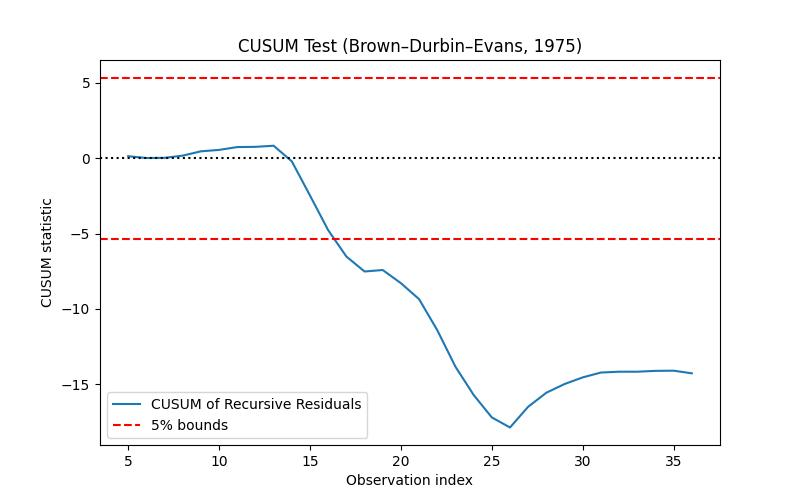

Değişim noktası zaman serisinin bir nokta öncesi ve sonrasında farklı karakterde olmasıdır. Bu noktaları bulmak için basit bir yaklaşım herhangi bir nokta öncesi ve sonrası zaman serisi parçalarını almak, ve önceki parçada lineer regresyon, yapıp katsayıları alıp gürültünün normalliğini kontrol etmektir. Eğer normallik varsa, katsayılar alınıp ikinci parçada kullanılır, gürültü yine normalse kopuş yoktur (aynı zaman serisi). Birincide gürültü normalliği yoksa kopuş yine yoktur, ilk parça doğru tanımlı değil. Sezonşallık benzer şekilde kontrol edilebilir, vs.
Bu alanda pek cok yaklasim var. Pür istatistik bazlı bir Poisson tekniğini de [8]’de görmüştük.
Diyelim ki elimizdeki bir modelin bir verinin iki parçasında değişik sonuçlar verip vermeyeceğini merak ediyoruz. Önceki regresyon örneğinde bunu tek kesi ve değişken üzerinden gördük. Peki ya model daha çetrefil olsaydı?
Bu durumda Chow Testini kullanabiliriz. Bu test daha önce gördüğümüz F-testini verinin iki parçası üzerinde işletir, modelin her iki parça üzerindeki SSE değeri, yani hata karelerinin toplamı (sum of squared errors) üzerinden bir istatistik yaratır. Sıfır hipotezi katsayıların iki bölgede aynı olduğudur, ve bunun irdelenmesi modelin her iki bölgedeki varyansına bakılarak yapılır. Tersi yönde kanıt var ise faraziyeyi reddederiz, ve iki bölgenin (en azından kullandığımız model açısından) çok farklı olduğu sonucuna varırız.
F-testi için kısıtlı (restricted), ve kısıtlı olmayan (unrestricted) modeli tanımlamak gerekiyor. Regresyonun her iki veri bölgesinde değişik değerlere sahip olmasına izin verirsek (yani regresyonu ayrı ayrı iki parça üzerinde işletirsek) bu kısıtlı olmayan demektir, eğer tüm veri üzerinde aynı regresyonu kullanıyorsak o zaman katsayılar değişik bölgelere göre değişemezler, bu da kısıtlı model olacaktır. Getirdiğimiz kısıtlama sayısı regresyonun kullandığı değişken sayısına eşittir. Eğer değişken sayısı \(k\) veri nokta sayısı \(n\) işe formül,
\[ F = \frac{SSE_r - (SSE_1 + SSE_2) / k}{(SSE_1 + SSE_2) / (n-2k)} \]
ki \(SSE_1,SSE_2\) sırasıyla 1. ve 2. bölgedeki hataların kare toplamıdır, \(SSE_u = SSE_1 + SSE_2\), yani bölgelerin ayrı ayrı hesaplanan hata kare toplamının toplamı kısıtlı olmayan SSE’yi verir. \(F\) rasgele değişkeni \(F_{k,n-2k}\) serbestlik derecesine sahip bir F dağılımına sahiptir. Kısıtlama \(k\) çünkü ikinci bölgede \(k\) kadar değişkenin değişik olmasına izin vermedik.
Örnek
Kullanacağımız veri Amerika’daki benzin tüketimi ile alakalı, bu veri içinde aslında iki farklı periyotu kapsıyor [8, sf. 209]. 1973’e kadar dünyada petrol boldu ve dünya petrol fiyatları ya stabil ya da düşüş trendinde idi. Fakat 1973’teki ambargo piyasada büyük değişimlere sebep oldu, kıtlık başladı, fiyatlar yükseldi.
Alttaki figürde benzin fiyatı (PG) ile kişi başına tüketim (per capita consumption) grafikli, ve görüldüğü gibi 1973 öncesi piyasa oldukça stabil gidiyor (kırmızı noktalar) ama sonrasında işler karışıyor (mavi noktalar).
import pandas as pd
dfg = pd.read_csv('gasoline.csv',sep='\\s+')
plt.plot(dfg[dfg['Year']<=1973].G,dfg[dfg['Year']<=1973].Pg,'r.')
plt.xlabel('G'); plt.ylabel('PG')
plt.plot(dfg[dfg['Year']>1973].G,dfg[dfg['Year']>1973].Pg,'b.')
plt.savefig('stat_tests2_02.png')
1973 ve 1980’deki fiyat zıplamaları net bir şekilde görülüyor, ayrıca tüketimde de daha fazla değişkenlik / varyans mevcut. Eğer bu veriye bir model uydurmak isteseydik, aynı modelin iki ayrı bölgeye her değişken için aynı mükemmeliyette uymasını beklemek hayalcilik olurdu.
Test edeceğimiz model şöyle,
model = 'Ln_G_Pop ~ Ln_Income_Pop + Ln_Pg + Ln_Pnc + Ln_Puc'Bu modeldeki fiyatlar G,Pnc,Puc, sırasıyla benzin, yeni
araba ve kullanılmış araba fiyatları. Ln_G_Pop,
G ile Pop (nüfus) bölünmesiyle elde ediliyor,
ve Ln notasyonumuz log işlemi demek. Income
ülke geliri, o da Pop ile bölünüyor ve log’u alınıyor.
dfg['Ln_G_Pop'] = np.log(dfg.G/dfg.Pop)
dfg['Ln_Income_Pop'] = np.log(dfg.Y/dfg.Pop)
dfg['Ln_Pg'] = np.log(dfg.Pg)
dfg['Ln_Pnc'] = np.log(dfg.Pnc)
dfg['Ln_Puc'] = np.log(dfg.Puc)plt.plot(dfg['Year'],dfg['Ln_G_Pop'])
plt.xlabel('Sene')
plt.ylabel('Ln(G/Nufus)')
plt.title('Amerika Benzin Tuketimi')
plt.savefig('stat_tests2_03.png')
Modeli tüm veri üzerinde işletirsek,
from statsmodels.formula.api import ols
res_r = ols(model, data=dfg).fit()
print (res_r.summary()) OLS Regression Results
==============================================================================
Dep. Variable: Ln_G_Pop R-squared: 0.969
Model: OLS Adj. R-squared: 0.965
Method: Least Squares F-statistic: 243.2
Date: Mon, 14 Jul 2025 Prob (F-statistic): 6.25e-23
Time: 13:58:02 Log-Likelihood: 79.913
No. Observations: 36 AIC: -149.8
Df Residuals: 31 BIC: -141.9
Df Model: 4
Covariance Type: nonrobust
=================================================================================
coef std err t P>|t| [0.025 0.975]
---------------------------------------------------------------------------------
Intercept -7.7892 0.359 -21.679 0.000 -8.522 -7.056
Ln_Income_Pop 2.1175 0.099 21.443 0.000 1.916 2.319
Ln_Pg -0.0979 0.028 -3.459 0.002 -0.156 -0.040
Ln_Pnc 0.1224 0.112 1.092 0.283 -0.106 0.351
Ln_Puc -0.1022 0.069 -1.475 0.150 -0.243 0.039
==============================================================================
Omnibus: 2.323 Durbin-Watson: 0.891
Prob(Omnibus): 0.313 Jarque-Bera (JB): 1.281
Skew: 0.049 Prob(JB): 0.527
Kurtosis: 2.081 Cond. No. 319.
==============================================================================
Notes:
[1] Standard Errors assume that the covariance matrix of the errors is correctly specified.Şimdi her iki parça üzerinde ayrı ayrı regresyon işletelim, ki parçaları 1973 değeri üzerinden oluşturacağız, bu bildiğimiz bir değer ve bir anlamda bu değerin gerçekten bir kopuş noktası olup olmadığını test etmek istiyoruz, ve ardından Chow testi için gerekli değerleri hesaplıyoruz,
dfg_x = dfg[['Ln_Income_Pop','Ln_Pg','Ln_Pnc','Ln_Puc']]
dfg_y = dfg['Ln_G_Pop']
print (len(dfg[dfg.Year<=1973]), len(dfg[dfg.Year>1973]))
res1 = ols(model, data=dfg[dfg.Year<1974]).fit()
res2 = ols(model, data=dfg[dfg.Year>=1974]).fit()
S_1 = np.sum(res1.resid**2)
S_2 = np.sum(res2.resid**2)
S_r = np.sum(res_r.resid**2)
print ('S 1 =', S_1)
print ('S 2 =', S_2)
print ('S_r =', S_r)
print ('N =', len(dfg))
k = dfg_x.shape[1]
tmp1 = (S_r-(S_1+S_2))/k
tmp2 = (S_1+S_2)/(len(dfg)-2*k-1)
F = tmp1/tmp2
print ('F =', F)
import scipy.stats as st
f = st.f(k,len(dfg)-2*k-1)
print ('p degeri =', 1-f.cdf(F))14 22
S 1 = 0.0025673399475329207
S 2 = 0.00491175470665726
S_r = 0.024873436261972474
N = 36
F = 15.69866558471087
p degeri = 9.40286063455531e-07Hesaplanan p değeri çok küçük, ve 0.05’ten daha az, demek ki hipotez reddedildi. Demek ki hakikaten 1973’te bir değişim olmuş!
Paket
pip install chowtest ile kurulabilecek bir paket var
[10], bu paketin kullanımı,
import chow_test, pandas as pd
df = pd.DataFrame({'x': [1, 1, 2, 3, 4, 4, 5, 5, 6, 7, 7, 8, 8, 9, 10, 10,
11, 12, 12, 13, 14, 15, 15, 16, 17, 18, 18, 19, 20, 20],
'y': [3, 5, 6, 10, 13, 15, 17, 14, 20, 23, 25, 27, 30, 30, 31,
33, 32, 32, 30, 32, 34, 34, 37, 35, 34, 36, 34, 37, 38, 36]})
print (df)
res = chow_test.chow_test(df['y'], df['x'],15,16,.05)
print (df.iloc[15])
print (res) x y
0 1 3
1 1 5
2 2 6
3 3 10
4 4 13
5 4 15
6 5 17
7 5 14
8 6 20
9 7 23
10 7 25
11 8 27
12 8 30
13 9 30
14 10 31
15 10 33
16 11 32
17 12 32
18 12 30
19 13 32
20 14 34
21 15 34
22 15 37
23 16 35
24 17 34
25 18 36
26 18 34
27 19 37
28 20 38
29 20 36
Reject the null hypothesis of equality of regression coefficients in the two periods.
Chow Statistic: 37.96716203561837, P_value: 2.6531641550420204e-08
x 10
y 33
Name: 15, dtype: int64
(37.96716203561837, 2.6531641550420204e-08)Değişim Noktasını Bulmak
Eğer değişim anı 1973’ü bilmeseydik onu nasıl ortaya çıkartırdık? Bir yaklaşıma göre [5] tüm seneleri teker teker deneyerek Chow testini ardı ardına işletebilirdik ve elde edilen en büyük F değeri bize değişim noktasını verirdi. Bu kodu işletirsek,
from statsmodels.regression.linear_model import OLS
from numpy.linalg import pinv
def supf(y, x, p):
N = y.shape[0]
range = np.floor(np.array([N * p, N * (1 - p)]))
range = np.arange(range[0], range[1] + 1, dtype=np.int32)
x = x - np.mean(x)
y = y - np.mean(y)
e = OLS(y,x).fit().resid
S_r = np.sum(e**2)
k = x.shape[1]
print ('N =',N)
print ('k =',k)
print ('N-k =',N-k)
F_stat = np.zeros(N)
for t in range:
X1 = x[:t]
X2 = x[t:]
e[:t] = OLS(y[:t],X1).fit().resid
e[t:] = OLS(y[t:],X2).fit().resid
R2_u = 1 - e.dot(e) / y.dot(y)
S_u = np.sum(e**2)
F_stat[t] = ((S_r - S_u) / k) / (( S_u) / (N-2*k))
return F_stat.argmax(),F_stat.max()
p = 0.2
idx,val = supf(dfg_y, dfg_x, p)
print (idx,val)
print ('Sene', dfg.Year[idx])N = 36
k = 4
N-k = 32
13 257.74906757993983
Sene 1973Not: Sene araması için baştan ve sonda bir kısım veri atlandı, ki her iki parça için elde yeterli veri olabilsin.
Not: lmfit hakkında bazı tavsiyeler için bkz [12]
yazısı.
Sonucu 1974 olarak bulduk. Fena değil!
Not: Fakat şu gözlemi de eklemek gerekiyor.. p değerini nihai bir karar verici olarak kullanmak her zaman ise yaramayabilir. Dikkat edersek örneklem büyüklüğü p değeri hesabında önemli bir yer tutuyor, o sebeple veri setlerinin büyüdüğü bu günlerde p değeri her zaman çok küçük değerler gösterebilir. Her noktada F değeri hesaplayıp en büyüğünü bulmak ise yarar fakat tek bir noktaya bakıp “bu nokta ayraç olarak istatistiki öneme sahip mi?’’ sorusu her örneklem büyüklüğünde işlemeyebilir.
Cusum yaklaşımı [5] makalesinde araştırılmış, özyineli (recursive), yani teker teker her yeni veri noktası üzerinde işlem yapan ve kopuşları o anda yakalamaya uğraşan bir yaklaşımdır. Özyineli regresyon konusunu [4]’te gördük. Bir regresyon hipotezi ile başlayıp her veri noktası geldiğinde regresyonu güncellemek, iyileştirmek mümkündür. Cusum bunu yapar aynı anda modelin gürültüsünü kontrol eder ve zaman serisinin bazı hipotezlere uyup uymadığını her defasında kontrol eder, uyum yoksa kopuş yakalanmış demektir.
Faraziye şudur, normal kopuksuz bir zaman serisi her anda \(\beta_t\) vektöründe katsayılara sahipse, modelden geri kalan gürültünün ortalaması (mean) sıfır olacaktır, ve her anda \(\sigma_t\) varyasyonu için,
\[ \beta_1 = \beta_2 = ... = \beta_T = \beta \]
\[ \sigma_1^2 = \sigma_2^2 = ... = \sigma_T^2 = \sigma \]
Yani her anda katsayılar ve gürültünün varyasyonu sabit olmalı. Cusum \(\beta_t\)’deki değişimi yakalamak için ayarlanmıştır, bunu yapmak için gürültü ortalamasının sıfırdan sapmasını yakalamaya uğraşır. Detaylar için makaleye danışılabilir.
from numpy.linalg import inv
def recursive_cusum(y, X):
y, X = np.asarray(y), np.asarray(X)
n, k = X.shape
w = np.zeros(n)
S = np.zeros((k, k))
beta = np.zeros((k,))
for t in range(k, n):
X_t = X[:t]
y_t = y[:t]
S = X_t.T @ X_t
beta_t = inv(S) @ X_t.T @ y_t
x_new = X[t]
y_pred = x_new @ beta_t
denom = np.sqrt(1 + x_new @ inv(S) @ x_new)
w[t] = (y[t] - y_pred) / denom
# drop initial k zeros
w = w[k:]
sigma_hat = np.std(w, ddof=1)
Wt = np.cumsum(w / sigma_hat)
return Wt, w, sigma_hat
def plot_cusum(Wt, k, alpha=0.05):
T = len(Wt) + k
t = np.arange(k+1, T+1)
boundary = 0.948 * np.sqrt(T - k) # for alpha=0.05
plt.figure(figsize=(8, 5))
plt.plot(t, Wt, label="CUSUM of Recursive Residuals")
plt.axhline(boundary, color='r', linestyle='--', label='5% bounds')
plt.axhline(-boundary, color='r', linestyle='--')
plt.axhline(0, color='k', linestyle=':')
plt.xlabel('Observation index')
plt.ylabel('CUSUM statistic')
plt.title('CUSUM Test (Brown–Durbin–Evans, 1975)')
plt.legend()
plt.savefig('tser_022_de_01.jpg')
y = dfg['Ln_G_Pop'].values
X = dfg[['Ln_Income_Pop','Ln_Pg','Ln_Pnc','Ln_Puc']].values
Wt, w, sigma_hat = recursive_cusum(y, X)
plot_cusum(Wt, k=X.shape[1])
print (dfg.iloc[14].Year)
print (dfg.iloc[17].Year)1974.0
1977.0Bu metot üstte tarif edilenden biraz farklı, regresyon veya artıklara bakılmıyor, sadece \(x_t = \mu_t + \epsilon_t\), \(\epsilon_t \sim N(0,\sigma^2)\) farz ediliyor ve \(\mu_t\) sapmaları tespil edilmeye uğraşılıyor. Alttaki kod [2]’yi temel alır.
Ornek verideki zaman serisinde bariz kopuşlar var, yaklaşık indeks
100 anında, sonra 200 anında. PHT cusum ile bunları yakalayabiliriz,
geri döndürülen tai, taf birer vektördür, ve
sırasıyla kopuş noktasının başlangıç ve bitiş indisini verirler.
Yukarıda ilk kopuşun indisini görüyoruz.

Sağa dönük yeşil ok başlangıç, sola dönük bitiş demek. En tepede ikisi birbirinin üstüne bindi çünkü orada bir parça bitip diğeri başlıyor, ama olanlar gözüküyor herhalde. Kırmızı noktalar ise alarm anları olarak tanımlanmış.
Kaynaklar
[1] Brownlee, Introduction to Time Series Modeling with Python
[2] Github, https://raw.githubusercontent.com/BMClab/BMC/master/functions/detect_cusum.py
[3] MIT, OCW Single Variable Calculus, unit 5, Session 99, https://ocw.mit.edu/courses/mathematics/18-01sc-single-variable-calculus-fall-2010/index.htm
[4] Bayramlı, Hesapsal Bilim, Özyineli En Az Kareler
[5] Brown, et al, Techniques for Testing the Constancy of Regression Relationships over Time
[6] Bayramlı, Zaman Serileri, Sinüssel Regresyon (Sinusoidal Regression)
[7] Bayramlı, Istatistik, Testlere devam
[8] Bayramlı, Istatistik, Değişim Noktası Analizi
[9] Woroniuk, Chow test, https://github.com/David-Woroniuk/chowtest
[10] Bobbitt, How to Perform a Chow Test in Python, https://www.statology.org/chow-test-in-python/